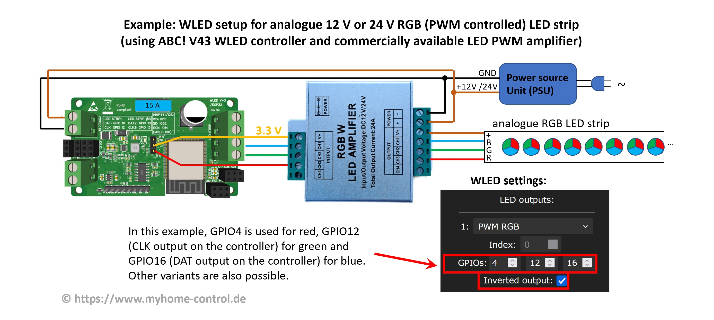

The most common mistakes are:
1. LED strip is connected from the back side: addressable LED strips have a direction indicated by small arrows on the strip. The data line must be connected from the side where the arrow begins.
2. Incorrect GPIO set: Check in WLED settings whether the correct GPIO number is set as data output. The ready-to-use controllers usually have the correct settings printed either on the housing or on the circuit board.
3. LED strips with many LEDs connected and set, but the current limiter is still at the default value (850 mA). This often has the effect that LEDs flash briefly when the color changes and then go out immediately or light up very dimly. Check and, if necessary, correct the settings in WLED.
4. Wrong LED type is set. The correct LED type and the correct color sequence (RGB, BGR, etc.) must be set in WLED settings. Check that these settings are correct. You have to know the LED type, but you can simply try out the color sequence to see which is the right one. Special attention must be paid to the WS2814 LED strip, which must be set as SK6812 in the preferences.
5. Wiring is bad. Wiring must be done thoroughly. Loose contacts, cold solder joints, etc. must be avoided. You also need to be careful about the correct sizing of the cables for safety reasons.
If WLED software is installed on your controller for the first time and you have not already entered your WiFi data during installation with the web-based installer, then the WLED controller creates an access point (WLAN) with the name WLED-AP. The password for this WiFi is wled1234.
This passwort can be changed under Config->WiFi setup.
In the initial state with default settings, WLED SW tries to connect to the WiFi selected. If it doesn't work, WLED-AP is created again. So just wait until WLED-AP reappears. However, this behavior can be changed in WLED settings. For example, WLED-AP can be prevented entirely. If you have already set it this way, only a "hard reset" or new flashing with WLED SW will help.
The answer to this question depends on whether you just want to try WLED or want to make a reliably working and safe setup.
Trying out WLED: an ESP8266 or ESP32 microcontroller board (e.g. the so-called D1 mini or NodeMCU boards), a 5V power supply and a 5V LED strip (for starters, e.g. with 30-90 LEDs) is sufficient for this. WLED software is installed on the microcontroller (e.g. with this web-based WLED Installer).
However, there are a few other things to keep in mind for a proper setup:
1. A level shifter is required for reliable data transmission from the controller to the LED strip (this is mandatory, especially with 12V or 24V LED strips). Then you have to solder something together or you can buy a professional ready-made WLED controller right away. Due to industrial production/assembly, these are also significantly more reliable than any hand-soldered structure.
2. For safety reasons, the correct cabling (length, cross-section, contacts) and the fuses to be integrated must be considered. Especially with LED strips, it gets more complicated because you need the so-called intermediate feeds. These must be planned and implemented correctly. WLED Calculator can be used as an starting point.
3. LED strips can get quite warm during operation and even overheat in the event of a fault. Again, for safety reasons, you have to protect the area around it: you shouldn't just lay LED strips like that, ideally you should integrate them into aluminum profiles or something similar. In normal operation, these act like a heat sink and thus extend the service life of the LEDs. In the event of a fault, they can protect the surroundings.
4. To save energy while LEDs are off, you might integarte relays that switch the voltage of LEDs off completely.
Currently (as of summer 2023) only the microcontrollers from Espressif, types ESP8266 and ESP32 (with dual core) are fully supported. Some of the newer types like ESP32-C3, ESP32-S2 and ESP32-S3 are experimentally supported, but productive use is not recommended yet because many bugs are suspected. In addition, the installation of these newer types is not that easy: there are several hardware variations/boards for which the SW must be specially compiled. It should also be mentioned that some ESP32-C3 boards (so-called C3 mini V1.0.0) are still being sold on the market where WLAN does not work properly.
It is also to mention that Sound Reactive WLED presently only supports ESP32 microcontrollers. The last release for ESP8266 was the SR WLED version 13.0-beta3.
ESP8266 based controllers can control up to approx. 600-650 LEDs. ESP32-based controllers can control up to 4,000 LEDs. However, it is recommended to distribute LED strips over several inputs so that no more than 1000 LEDs are connected to one input: many LEDs n one output lead to the control rate dropping and irregularities being seen with fast effects. When using some transmission protocols, it must also be taken into account that they may only support a limited number of LEDs.
Many 5V LED strips can also be operated without a level shifter, especially if the wire between the controller and the LED strip is very short. Sometimes, however, flickering can occur, e.g. the LEDs briefly flash white. Larger disruptions are also possible. With 12V or 24V LED strips, you usually cannot proceed without a level shifter. However, a level shifter is also expressly recommended for 5V LED strips, especially in productive use, to ensure trouble-free operation: a level shifter adapts the signal level of the microcontroller (3.3V) to the signal level of the LED strip (5V for all addressable LED types).
Professional WLED controllers always have an integrated level shifter.
The control of the addressable LED strips runs with control signals, which have a basic frequency in the range of 800 kHz up to the single-digit MHz range (depending on the type). Accordingly, a level shifter must be fast enough to be able to pass on these signals cleanly. Fast types such as SN74AHCT125, SN74AHCT32 or SN74LVC2T45 are therefore recommended. Types like SN74HCT (i.e. without “A”) are a bit slow and OK for LED types like WS2812B, but can be too slow for some other LED types. In any case, ready-made bidirectional I2C level shifters built with transistors are not recommended. If necessary, these can be used, but you should then replace the pull-up resistor at the output (usually 10 kOhm) with a smaller one (<=1 kOhm).
SN74AHCT125 LevelShifters are interconnected as follows:

TXS0108 LevelShifter can also be used. Small PCBs with this level shifter are often sold and can be used as follows:
In most cases, a resistor in the 33K to 68K ohm range is recommended. The old recommendation was 470 kOhm, but from today's point of view the value in this range is not OK. In principle, operation without a resistor is also possible, but should be avoided in productive use.
The answer depends on what you want to do with it. An ESP8266 or ESP32 microcontroller board without any additional components is sufficient for experimenting/trying it out. If you want to do a clean installation that should work for a longer period of time without problems, you really can't get around a ready-made professional part. Qualitative, ready-made WLED controllers not only integrate all the necessary components, they are also significantly more reliable than any hand-soldered PCBs due to industrial production/assembly. The worst idea is to build the whole thing with jumper wire or something similar: not only are loose contacts pre-programmed, but you can also create a high safety risk with them.
Yes. You need a free digital input (GPIO) on the controller for this. Then you can connect a button between this input and ground (GND), for example a momentary button. If you press down the button, this GPIO is connected to ground at that moment and the controller registers this as a click. However, for this to happen, the button must be set correctly in the WLED preferences. First, a button must be configured. To do this, under Config->LED Preferences you have to assign the GPIO number to which the button is connected to a “Button” (e.g. you take “Button 1” first). You also have to define the button type. For momentary button it is a "Pushbutton". Then you can set what should happen when the button is clicked. To do this, go to Config->Time & Macros. Here in the "Button actions" area you can define up to three Presets for each button (enter Preset ID) that must be executed if a button is pressed down briefly, long or double-clicked (therefore three columns). Of course, presets must have been created beforehand. For switch type button you can define what preset should be called when it switches on and off. The third setting (third column) does not hae any meaning in this case.
WLED software supports up to 4 buttons for ESP32 based and up to 2 buttons for ESP8266 based controllers. Each button needs its own GPIO input and each button can perform up to three actions: at a short click, at a long click and at a double click.
Yes. There are two types of sensors:
1. With a possibility to adjust the sensitivity and the time delay. E.g. HC-SR501 type. These sensors can be connected to WLED and configured as a button.
2. Without the possibility to adjust the sensitivity and the time delay. E.g. HC-SR602 type. For these you have to compile WLED with a PIR Sensor UserMod.
Below we take a closer look at the HC-SR501 sensor:
It has the following features:
1) Three pins for connection (GND, supply voltage 5…12 V, data signal with 3.3V level). Ground (GND) and the supply voltage can be connected directly to a power supply unit (5 V or 12 V). Data signal can be connected directly to a GPIO of an ESP8266 or ESP32 controller.
2) Jumper to switch between two modes. In position 1, when a movement is detected, a HIGH level (3.3V) is output on the data signal and the adjustable holding time is maintained. The data signal then goes back to LOW (0V), regardless of whether the movement is still present or not. If the movement continues, the data signal is switched back to HIGH after a blocking time of approx. 2.5 s. In position 2 it works similarly, but the data signal does not go to LOW as long as the movement is still present. Only when the movement no longer exists for an adjustable holding time, the data signal goes to LOW. So, position 2 is what you normally need.
3) Poti for setting the holding time. If this is turned counterclockwise as far as it will go, the holding time is approx. 3…5 s. In the middle position it is approx. 100 s and in the end position clockwise approx. 200 s.
4) Poti for adjusting the sensitivity. This is approx. 3 to 7 meters and is set lower if you turn the potentiometer clockwise.
In WLED SW you have two options how the sensor can be used:
Option 1) As a switch. You set a button under “Config->”LED Preferences” so that you can set the GPIO used for the data signal and select “Switch”. Then, when movement is detected, LEDs are switched on and go out after a holding time without movement.
Option 2) As a PIR sensor, you can set two presets, one of which is activated when movement is detected, and the other when there is no more movement and the hold time has expired. This gives more flexibility to set what exactly should happen.
Yes. There are two options:
1. An infrared remote control (IR). For this, however, an infrared receiver must be connected to the WLED controller. Recommended types are TSOP38238 or KY-022. These receivers each have three pins: 3.3V, GND and IR data. IR data pin must be connected to a free GPIO pin. This GPIO must then be set as IR GPIO under "Config->LED Preferences". You also have to choose which infrared remote control you have. The following types are available: 24-key RGB, 24-key with CT, 40-key blue, 44-key RGB, 21-key RGB, 6-key black, 9-key red, JSON remote. The last type gives the opportunity to use any remote control. For this, the IR codes must be listed in a JSON file and then uploaded to the WLED.
2. Since WLED version 14.0-beta3: An ESP-NOW compatible remote control that uses radio network. An example of this is the „WIZmote“ remote control. This is based on an ESP microcontroller. ESP-NOW can be activated in WLED settings. You have to enter the Hardware MAC address of the remote control. This is determined by clicking on any button on the remote control and copying the last received MAC address from the "Last Seen" field to the "Hardware MAC" field in WLED ESP-NOW settings (“Config->WiFi Setup”) and saving it with "Save". Advantages: no special receiver needs to be attached to the WLED controller and the signals are transmitted via radio network. Therefore there is no line of sight between the remote control and the WLED controller required, as is the case with an IR remote control.
The 4 buttons "1"-"4" of the WIZmote remote control are linked to presets 1 to 4. The meaning of other keys is self-explanatory. Attention: WIZmote needs two good quality AAA batteries to work properly. If the batteries are too weak, the correct signal will not be sent, even if the blue LED on the remote control lights up briefly, actually indicating signal transmission.
Yes. However, this is only possible with an ESP32-based controller and additional hardware. Then you can activate Ethernet under "Config->WiFi Setup" by selecting the Ethernet controller type or adapter type: ABC! WLED V43 & compatible, ESP32-POE, ESP32Deux, KIT-VE etc. The WLED version used must have been compiled with Ethernet support.
WLED makes most sense with so-called digital, addressable LED strips, where you can control individual LEDs separately. This allows you to set many effects. The supported types are: WS2801, WS2811, WS2812B, WS2813, WS2814, WS1815, SK6812, APA102, LPD8806, SK9822, TM1814, GS8208. There are sometimes new types coming onto the market that have a compatible control protocol.
However, WLED SW also supports the so-called analog LED strips, where all LEDs can only be controlled in the same way. These types need their own GPIO for each color. There are monochrome CCT, RGB, RGBW and RGBCCT strips. In addition, you not only need a microcontroller, but in any case some additional components such as MOSFETs (or commercially available RGB(W) LED aplifiers/repeaters/boosters).
Analog LED strips not only need a microcontroller for control, but also some additional components such as MOSFETs.
A basic circuit diagram is shown here. You need one MOSFET and one GPIO per color. It should be noted that the MOSFETs are destroyed very quickly in the event of an overload. To reduce the risk of fire and prevent personal injury, additional circuit elements should be implemented to protect MOSFETs from overtemperature and overload. Depending on the type, fuses are too slow for this! You might consider using self-protected MOSFETs too or the entire MOSFET circuit can be packed into a fire-retardant (e.g. metallic) housing.
The commercially available so-called RGB(W) LED amplifiers can also be used (also called repeaters/boosters). These typically include optocouplers and MOSFET circuitry (1 to 5 channels) and can be used, for example, as follows:
Note that there is no GND connection between the controller and the amplifier. And this despite the fact that with all other WLED circuits it is always said that all GNDs must be connected to each other. This special feature is due to the fact that the inputs of the amplifier are galvanically decoupled from the outputs by optocouplers and the amplifier in this circuit is used slightly differently than its usual application.
You can connect the GPIOs directly (3.3V signal level) to the inputs of the amplifier or, if you use a ready-made WLED controller, you can also use the data outputs (of the level shifter, i.e. 5 V signal level). You can also use both at the same time:

The amplifier shown in the picture is a cheap product. Its advantage is a metal case. However, its circuit is very simple:
The simple structure means that the duty cycle of the PWM signal (the ratio between pulse and period duration) at the output is slightly distorted compared to the input. In many cases this is not critical, but it does result in the color composition of an RGB strip being slightly distorted. A significantly better (and slightly more expensive) version is described in this article (in German). Here the MOSFETs are controlled with push-pull drivers. This and some other measures in the circuit mean that the PWM signal is reproduced very accurately at the output.
There are also other variants on the market (e.g. MiBoxer RGBW 5-channel amplifier and similar ones) that enable more precise PWM reproduction, but require modification as shown in this picture:
With this modification, this amplifier can be used, for example, as follows:
The disadvantage of this type, however, is that it has a plastic housing. We have not investigated whether this plastic housing has a fire-retardant effect. Special safety precautions may therefore be necessary.
Three other types are shown below:
The first type works quite well, the second only with modification of the resistors. The third type must under no circumstances be used for the application discussed here, as it has no galvanic isolation through optocouplers and an attempt to use it would lead to the destruction of the WLED controller.
LED strips of this type are RGBW strips, similar to SK6812 type. They must therefore be treated as SK6812 type in WLED LED preferences. In addition, in these strips, the white channel and the green channel are often swapped, so you have to set "Swap W & G" in the WLED preferences. This setting option is only available starting with WLED version 0.14.0-beta1.
##03##What should I consider using addressable 12V and 24V LED types?
On the one hand, with these types, trouble-free operation is usually only possible with a LevelShifter. On the other hand, these types often have individual LEDs arranged in groups of 3 (at 12V) or in groups of 6 (at 24V). LEDs in a group cannot be controlled independently of each other. One also speaks of a logical LED, which then physically consists of 3 or 6 LEDs.
Most addressable LED strip types only require a data signal for control. The frequency of the control signal is fixed for these types. However, there are also addressable LED types that require a clock signal in addition to the data signal. With these types, a clock signal is transmitted from the controller to the LED strips. In this case two GPIOs are needed for the control and these must be set correctly in the WLED settings. The advantage is that the clock control enables faster data transfer from the controller to the LED strips. Faster effects can be run with a large number of LEDs.
LED strip types WS2813 and WS2815 have a second (backup) data line. This is marked on the strip as BI (Backup Input) / BO (Backup Output). This second data line ensures that if one LED has failed, the data still arrives at other LEDs. Data signal (DI/DO), GND and +V are connected to the controller. Backup line (BI/BO) must be connected to GND.
The lines for data transmission (data and eventually clock signals) can have a very small cross-section because only very small current flows there. However, the lines for the power supply (GND and 5V/12V/24V etc.) must be properly dimensioned. For this you should have sufficient electrical knowledge. The WLED Calculator can be used as a basis for the design.
For safe operation, the cables and LED strips must be, among other, protected against overload and short circuits. However, this is not done by simply installing any fuse. A fuse, e.g. a melting fuse, is only effective if it is correctly rated. For this you should have sufficient electrical knowledge. The WLED Calculator can be used as a basis for the design.
A longer LED strip with many LEDs can require quite a lot of power. In this case the current cannot be fed in full only at the beginning of an LED strip. The problem is that because of the voltage drop within the strip, too little voltage arrives at the rear LEDs, so that they don't shine with full intensity or the colors are even distorted. It may therefore be necessary to supply LED strips with power from back side or even additionally at one or more points in between. How many injections you need can be calculated with the WLED Calculator.
No. The value specified for the fuse is a so-called nominal value of the fuse. Their exact meaning varies slightly depending on the fuse type. Lets take a look at typical car fuses as an example. These are often used in WLED controllers because their voltage range (up to 32 V), suitability for DC currents and large selection of nominal values (1 A to 40 A) make them particularly suitable for this application. These fuses are specified in the ISO 8820-3 standard and therefore always have a similar behavior, even if they are produced by different manufacturers. But be careful: cheap replicas can often be found on various sales platforms that do not meet this specification at all and therefore sometimes do not work properly. So, e.g. a 10A car fuse must be able to carry 110% of the nominal current, i.e. 11A, for at least 100 hours. It will still carry 135% of the nominal current (i.e. 13.5A) for 0.75s to 600 seconds before it melts and interrupts the current. It can carry twice of the nominal current (20A) for up to 5 s, at least for 0.15 s. And it will carry even 6 times of the nominal current (60 A) for up to 100 ms. This is valid for the nominal room temperature, at other temperatures the values can be different. If, for example, a 10A fuse can carry the current of 20A for up to 5s, other components that the fuse has to protect must also be able to carry this current without starting to burn during this time.
It is often believed that using any fuse is sufficient and everything is safe. In no case! Only a correctly selected and dimensioned fuse can interrupt the current in reasonable time perventing a fire in case of an overload or short circuit. The procedure of selecting fuse and wires is as follows:
1. You determine the operating current that must flow through the fuse. This is, for example, the maximum current that the LEDs consume.
2. Now you choose a fuse that has enough current carrying capability to carry the operating current over the lifetime without melting too early.
3. You choose connection cables, clamps, etc. Two aspects play a role here:
a) These components must not overheat at an operating current, but they must also be able to withstand all currents for as long as the fuse lets them through. If, for example, a 10A automotive mini fuse was selected for an operating current of 8A, the cables etc. must be able to carry 11 A permanently, 13.5 A for at least 600 s, 20 A for 5 seconds and even 60 A for 100 ms without catching a fire.
b) Connecting cables must not cause too high voltage drop too. Here it is not only the cross-section of the cable that is important, but also the length. The voltage drop can be the reason why you have to choose a significantly higher cross-section, although from point a) not such a high cable cross-section would be necessary.
WLED Calculator provides a good starting point for such calculations.
Three WLED SW forks are particularly important:
1. The Original: Aircoookie WLED. This is the original WLED SW. Up to version 0.13.3 there was no way to make Sound Reactive WLED using this version. Beginning with version 0.14.0 a so-called Audio Reactive Usermod is available.
2. Sound Reactive WLED: this branch was created a few years ago and implements the so-called Sound Reactive WLED. With a microphone or line-in input it is possible to have the LEDs react to the music (or other noises) and then light up with music beats, for example.
3. MoonModules WLED: this branch is a "playground" created by some WLED developers, mainly to try out new functions or to test experimental changes of existing code.
With this WLED installer you can install and try out every version.
In principle, a Usermod is an extension that a user/programmer can program in addition to the basic functions of the WLED software. In order to be able to use a Usermod, it must be compiled together with WLED software. Official WLED releases do not contain any Usermods, unofficial sources such as WLED Installer also offer pre-compiled WLED versions with some Usermods included. In many cases, however, this means that if you want to use one or more usermods, you have to compile WLED software for them yourself. This WLED Compile Helper can be useful. It is also important to note that some usermods may be outdated and may not work correctly or not at all with the current WLED version, because user mods were not programmed by the WLED community, but often by individual users/developers and are therefore not well maintained or not kept up to date.
Segments add the ability to divide an LED strip into virtual parts to assign each part its own color or effect. This allows a variety of special effects to be realized. For example, you can split LED strips into two segments and set the second segment as a mirrored one: this way you can create symmetrical effects.
As of WLED version 14.0, additional symbols are displayed for effects. These indicate certain possibilities or special features of the respective effect:
"One dot": these effects are 0D effects, meaning that all LEDs will have the same color for these effects.
"3 dots": these effects are 1D effects for LED strips.
"Matrix": these effects are 2D effects for LED matrices.
"Palette": with this effect, different color palettes can be set.
"Note": this effect is an audio reactive effect and reacts to the volume of the audio signal.
"Double Note": this effect is an audio reactive effect and reacts to the frequencies in the audio signal.
Unfortunately, not directly. WLED Interface in the browser or WLED app only work if the controller and the PC/smartphone are in the same local network. Secure direct control via the Internet is not possible. However, it is possible to install a home automation system (requires special hardware), such as Home Assistant or IoBroker. These have the ability to control WLED controllers and at the same time provide the options to access the systems via the Internet. Another option is to set up a VPN connection. Some modern routers support this. Then you first connect to your home network via the Internet (via secure VPN technology) and then you can access WLED as usual. Another simple but limited option is to pair WLED Controller with Alexa device (like Amazon Echo) if you have one. Then you can control the controller via the Alexa app, but only change on and off state as well as the brightness. Of course, you could theoretically enable direct access from the Internet to the WLED controller in the router. However, this is extremely insecure because the data is not protected in any way and anyone can control your controller in this way.
Yes. In the "Alexa Voice Assistant" area under "Config->Sync Interfaces" you have to tick "Emulate Alexa device:" and save with "Save". Then you restart the controller, start the search for new devices in the Alexa app and set up the controller like a lamp. However, the control options are very limited to switching on and off, changing the brightness and calling some presets.
Two steps are necessary for this. First, you have to create a preset that activates the desired color or effect. Second, you have to enter the ID of the created preset under Config -> LED Preferences in the setting “Apply preset … at boot” and then click on “Save” at the bottom of the preferences page.
In exactly the same way, an entire playlist can be played when booting up. For this you have to enter a playlist ID in the above setting instead of a preset ID.
"Mapping" is the possibility of changing the order of the individual LEDs in the strip programmatically. Normally, all LEDs in a strip are connected in series (via the data line): 1->2->3->4->.... For some special effects or especially for 2D matrices you will often change the order without having to solder the whole strip together differently. For example, you can achieve that after each 3 LEDs the order of the LEDs is reversed, also by mapping, as if the logical order of the LEDs in the strip was like this: 1->2->3->6->5->4 ->7 ->8 ->9 ->12 ->11 ->10 etc.
Mapping is set via a JSON file, which must be named ledmap.json. You also need to prepare a special file in JSON format. For the example above, the content of this file will then look like this: {"map":[0,1,2,5,4,3,6,7,8,11,10,9]}. Please note that the LEDs are numbered starting with 0. You should also avoid using unnecessary spaces. You can omit individual LED positions by specifying -1 in their place.
Multiple maps can also be defined. For each map you then use a separate file called ledmapX.json, where X is the number (1, 2 etc.). Which map is then used can be specified in a preset with "ledmap":X,..., where X is the map number of the JSON file. In the simplest case, the content of the preset (API command) looks like this: {"on":true,"ledmap":1}. The ledmap.json file (even without a number), on the other hand, is not applied via preset, but always automatically when starting the controller.
The created ledmap.json file (or ledmapX.json files) must be uploaded to the WLED controller. To do this, open the address http://YourWLEDIP/edit in the browser, where YourWLEDIP is the IP address of your WLED controller. This is a tool to edit the configuration files on the WLED controller. In order for this page to be displayed correctly, your controller must be connected to the Internet, also already integrated into your WLAN network and no longer "only" available as a WLED-AP. You can also create the JSON files directly here. In order for the created or uploaded ledmap.json file to be applied, the controller must be restarted.
Yes. 2D support was first introduced in Sound Reactive WLED and then implemented and significantly improved in standard WLED version 0.14.0. This status is described here.
To set the 2D LED matrix, go to "Config" -> "2D Configuration". Here you can define the number of physical panels that together form a matrix. In the simplest case, the matrix consists of one single panel.
You set the properties for each panel: position of the first LED, orientation, number of LEDs in the X and Y directions. Don't forget to set the LEDs correctly under "Config" -> "LED Preferences": the total number of LEDs, GPIO etc.
If you have set everything correctly, 2D effects can be used. You can also display simple images on LED matrices using WLED (see next question).
Yes. With the help of special API commands, which can also be set and saved as a preset, you can tell WLED in which color and brightness each individual pixel must be controlled. This is how an image can be displayed. If you want to manually convert an image into an API command, it would take a lot of time. However, there is a tool (PixelArt Converter) that helps. This means that anyone without WLED API knowledge can convert an image into an API command that is understood by WLED software. The source code of this tool can be found here (ext. link). The following describes how it works. Essentially the whole thing consists of three steps:
1) Download WLED PixelArt Converter from GitHub to your PC and open it in a browser
2) Select image, set parameters and convert
3) Send the result (API command) to the WLED controller and, if necessary, save it as a preset.
To use the WLED PixelArt Converter you have to download the file https://raw.githubusercontent.com/werkstrom/WLED-PixelArtConverter/main/pixart.htm (ext. link). When the file opens in the browser, right-click and then click "Save As" or "Save Page As". You can then open the saved file in the browser like a website:
Here you have to enter the IP address of your own WLED controller under "Device IP/host name:". Then click on the "Download from cloud" icon. In the simplest case, if you have not defined any segments in WLED itself, the following appears under "Target segment id:": "undefined (index: 0)". Normally you should turn on "Scale image" and enter the dimension of the matrix (X/Y). Next, select the file with the image. The original image and the generated API command, immediately appears below
as well as a preview of how LEDs are controlled:
With "Send to device" you can send the image directly to the WLED controller. The result then looks like this:
In order for the image to be permanently saved on the controller, you have to copy the API command and then save it as a preset in the WLED controller. To do this, create a new preset, give it a name, deselect the "use current state" option, insert the API command into the API input area ("API Command") and save the preset:
Yes. From WLED version 0.14.0 there is a "Scrolling Text" effect. The text to be displayed is set by segment name. In the simplest case you only have one segment and you name it with the text that should be displayed. When it comes to scrolling text, you can regulate the font size and speed, among other things.
It is also possible to overlay the scrolling text with a different effect. For example, you can set a color as the background for the text. To do this you have to set two segments that are exactly the same (except for the segment name). Then the segments virtually overlap.
In the first segment you set the desired effect that should serve as the background (e.g. "Solid" for a simple background color). For the second segment, enter the desired text as the segment name and select the "Scrolling Text" effect. You have to click on "Overlay".
A preset is a saved LED light configuration that you can recall later without having to set every details again. For example, you can set segments for a certain desired effect, define a color or an effect for each segment. You can then save these settings in a preset and call them up again and again with only one click when you need them. You can also set in WLED settings that a certain preset is automatically called up when the controller is started. Or you can connect a physical button to the controller and then assign a preset to that button. Or you can set in WLED settings that a preset is activated at a certain time of day.
Some preset examples are shown below. Presets can be created by capturing the current status and saving it as a preset. Or you can describe a preset with an API command. There are two types of API commands: HTTP API or JSON API. You can choose to use one or the other type, while JSON API offering more options. You then have to type these API commands into Preset in the "API command" window:
| HTTP API | JSON API | Description |
|---|---|---|
| T=2 | {"on":"t"} | It is switched between on and off state (toggle). So when LEDs are off, they turn on and vice versa. |
| T=1 | {"on":true} | The LEDs turn on (or no change if they were on before) |
| T=0 | {"on":false} | The LEDs are switched off (or no change if they were already on) |
| {"on":true,"tt":0} | The LEDs are switched on, the LEDs light up immediately without slowly dimming, regardless of the global setting "Transition". | |
| A=128 | {"bri": 128} | DThe brightness is set to 50%. Minimum value is 0, maximum value (100%) is 255. Therefore 128 means the brightness of 50% |
| A=~10 | {"bri":"~10"} | The brightness is increased by 10. So if this was 100 before, it will be 110. |
| A=~-20 | {"bri":"~-10"} | The brightness is decreased by 20. So if this was 100 before, it will be 80. |
| R=255&G=0&B=0 | {"seg":[{"col":[[255,0,0]]}]} | The color of LEDs is set to red |
| R=0&G=255&B=0&A=128&FX=0 | {"seg":[{"fx":0,"col":[[0,255,0]]}],"bri":128} | The color of LEDs is set to green, brightness to 50% (value 128) and effect to solid (FX=0) |
| P1=1&P2=3&PL=~ | {"ps":"1~3~"} | Iterate between presets with IDs 1 to 3: When called up, the next preset is called up and so on in cycle: 1->2->3->1->2->3->1->….. |
Playlist is the possibility to play a whole series of presets one after the other. In this way, even more complex effects can be created based on simple effects. For each preset you can define the playing time (duration) and the transition time to the next preset (transition). You can choose whether the playlist must be played only once or repeated indefinitely. You can also set that individual presets in the playlist are not played in a defined order, but randomly one after the other (shuffle).
WLED UDP Sync is the possibility to operate several WLED controllers in such a way that the connected LED strips on each controller are controlled synchronously and exactly the same way, i.e. always play the same color or the same effect by only setting this color or effect on one controller. You can also set what exactly needs to be synchronized: brightness, color, effects, segments, etc. In this way, several LED strips can show the same play of colors, even if they are connected to different WLED controllers for physical locations reasons, for example. The settings must be made in the "WLED broadcast" area under "Config->Sync Interfaces". Up to 8 groups can be defined. For example, you assign two controllers to one group and the other two to the other. Then the first two controllers are synchronized with each other (group 1) and the other two with each other (group 2), but not groups 1 and 2 with each other. On the main WLED user interface page there is a "Sync" button at the top that allows you to toggle WLED sync on and off. "UDP" in "WLED UDP Sync" means that this synchronization is implemented over a UDP network protocol.
"Virtual LEDs" are the possibility of operating two or more LED strips on different controllers like one strip. E.g. you connect one LED strip to a first WLED controller and another LED strip to second WLED controller. But you want both strips to be controlled like a single strip. To do this, you first have to configure both strips on each controller as usually (LED type, number, etc.). Then you add a virtual LED strip to the first controller (as the second strip). For that you go to "LED Outputs" under "Config->LED Preferences", click on a "+" symbol and select "DDP RGB (network)" or „DDP RGBW (network)“ as the strip type. Here you have to enter the start number and the number of LEDs (on the second strip). You also have to enter the IP address of the second controller. This way the first controller will control its own LED strip and also the second LED strip via network as if it were one.
Basically, both means the possibility of using WLED controllers in such a way that the LEDs react to music or other noises and light up in time. However, original WLED software did not have this option, so at that time a fork was generated by the software, where this option was then additionally implemented. This WLED software is called Sound Reactive WLED (SR WLED). Later, a UserMod was developed based on Sound Reactive WLED for the original WLED version, also with such a functionality. This UserMod is called AudioReactive (AR WLED). For SR WLED and AR WLED you need an ESP32 based WLED controller. SR WLED also supported ESP8266 microcontrollers up to version 0.13.0-beta3, but no longer after that.
Three microphone types are supported:
1.Analog microphones. Examples are MAX4466 and MAX9814 (slightly better). These microphones are easy to use: you just have to connect 3.3V, GND and the analog output from the microphone to an ADC input (Analog-to-Digital Converter) of an ESP8266 or ESP32. However, the big disadvantage is the quality: both from the microphones themselves and from the ADCs integrated into microcontrollers, which are actually not well suited for audio processing.
2. I2S digital microphones. Examples are INMP441 and ICS-43434/ICS-43432. These have an integrated ADC and already output a digital signal. The advantage is the best possible quality. The disadvantages are higher complexity (you need several PINs for a digital signal) and support only for ESP32-based controllers, not in combination with ESP8266 because it has no I2S interface.
3.PDM microphones. An example is SPM1423. In principle, these are also digital microphones with an integrated Sigma-Delta ADC. They are slightly cheaper than I2S microphones, require one PIN less and the quality is quite good. Also, for this type you need an ESP32 based controller.
The correct microphone type and the GPIOs used must then be set in WLED settings.
Yes. There are two options:
1. Prepare the analog line-out or headphone signal with a simple circuit and connect it to an ADC input from the ESP8266 or ESP32. In this case, the whole thing works like with an analog microphone. The quality is not the best here either, because the ESP8266/ESP32 ADC is not particularly good at converting audio signals, and the signal conditioning circuitry is very simple, but not very good. In addition, the sensitivity can be quite poor, so that the whole thing only works at a higher volume of the signal.
In some cases you can do without this circuit and connect the GND of the audio source and an audio channel (left or right) directly to ESP (GND and analog input, e.g. A0 pin on the ESP8266 or GPIO36 on ESP32). This solution is rather quite dirty workaround and the quality might be better or worser.
2. Convert the analog line-out or headphone signal into a digital I2S signal with a special analog-to-I2S adapter (based on for example CirrusLogic CS5343 or TI PCM1808 or es7243 chips) and then connect it to the ESP32. In this case, the whole thing works like with a digital I2S microphone. The only difference to I2S microphone is that you need an extra PIN for MCLK (Master Clock) signal, which can only be generated by the ESP32 on GPIOs 0, 1 or 3. The other complication is that MCLK is a high frequency signal and must be wired extremly accurate and have short wires. For stability it is better to use ready-to-use controller with special Line-In to I2S adapter. The advantage is the best quality, good sensitivity and best sound reactive user experience.
There is an issue with WLED versions >0.13.2 in connection with some FritzBoxes with SW >=7.50 and possibly with the activated mesh. The WLED controller sometimes restarts every minute. A possible solution (but probably not 100%) is to deactivate UPnP in the FritzBox settings (under home network -> network -> network settings -> other settings -> transfer status information via UPnP). Another possible measure is to deactivate mDNS in WLED settings (delete mDNS name). The issue may also affect some UniFi devices with mesh activated.